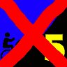
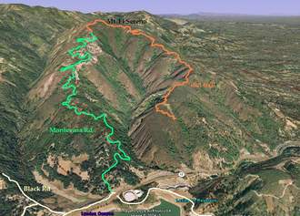

|  |
2008 Low-Key Hillclimbs Week 5: Montevina 01 Nov 2008 |
|
due to rain! We'll look into scheduling a "no-key" here after Hamilton! |
|  |
| Aerial photo of Montevina, courtesy of Stanford Cycling |
Rising up the opposing slope of the mountain from Bohlman is quiet Montevina Road, another Low-Key first. Sure, compared to Bohlman, perhaps you have nothing to fear from Montevina. But few roads compare to Bohlman, and by any rational standard, this one is tough. With an average grade exceeding 9% (and you know this means sections will be well above this number), Montevina will test your will as it winds up the ridge above Lexington Reservoir.
Our insurance demands it: helmets are required. Sorry kids, no exceptions!
We'll meet at the base of the Montevina Road climb. We recommend suggesting parking along Alma Bridge Rd. with a warm-up ride around the reservoir. There are parking lots at the dam and at Miller Point picnic area. There may be parking at the Lexington School on Old Santa Cruz Hwy. There is limited parking at Black and Montevina and at the Bear Creek overcrossing at CA17 (on the reservoir side). Support crew driving up Montevina in autos should be aware that the top of the road before the gate is less friendly than the top of Bohlman. It gets steeper up to the gate. There is only a small turnout/parking area off the road that might be muddy if it's wet. Don't forget to use parking brake!
Alternately, you can ride over from Saratoga over Bohlman and down the fire road to Montevina (Don't miss the right hand to the unpaved upper portion of Montevina from the fire road!). Okay, so maybe this would be a bit ambitious...
from Eric Murray:
there's room for about 5 cars at the bottom of Black rd.
When you get off 17 and stop at the stop sign, turn right over the overpass, and then right again. There's a dirt area right there that people park in, but I often see them getting tickets so I would not suggest parking there. If you continue on about 1/4 mile there is a large dirt parking area on the left. I have never seen cars there getting ticketed.
Riding around the lake is a good warmup. The best way is to ride down the highway 17N on ramp and ride the shoulder for about 1/2 mile until you get to Alma Bridge Rd. There is one storm grate near the offramp that you have to ride into the traffic lane to get around, otherwise the shoulder is ok. At the other side of the lake turn right across Alma Bridge and up the hill to Old Santa Cruz rd, where another right takes you back to the highway 17 overpass.
The loop around the lake is rolling hills, about 8 miles and 800 feet of climbing. It takes me about 30 minutes.
The bottom of Montevina is narrow and twisty. The locals tend to drive fast and use all of the road. I ride all the way to the right. There won't be people rushing to work or to take their kids to school on Saturday so it should be much better than during the week.
There's a loose dog near the bottom (small group of houses about 1/4 mile up) that likes to chase cyclists.
| stats | 3.32 miles, 1660 feet, 9.5% |
| format | mass start |
| time | reg 9:15 - 10:00 start 10:10am |
| coordinator | |
| aerial view | Stanford Cycling |
| route profile | Motionbased profile |
| weather | Weather Underground Weather Bonk |
| registration form |
PDF release form |
| entry fee | $10 voluntary donation free for juniors 2 free for volunteers free for coordinators |
{kind=link}
{kind=link}